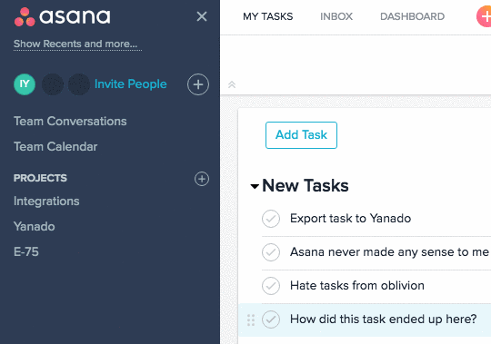
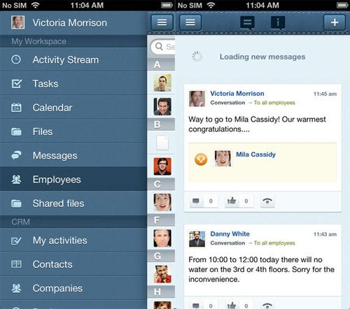
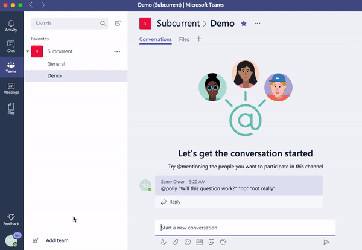
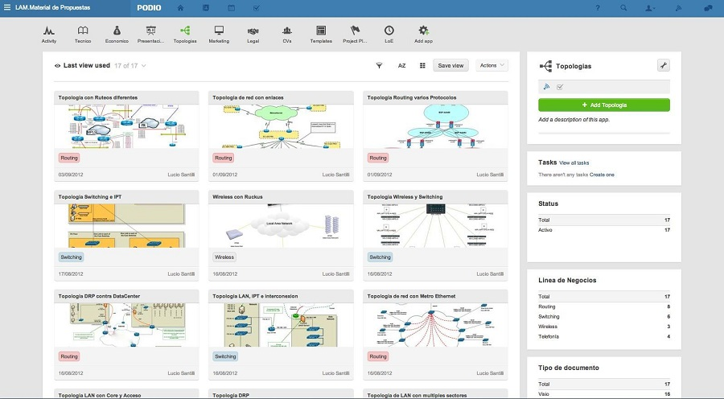
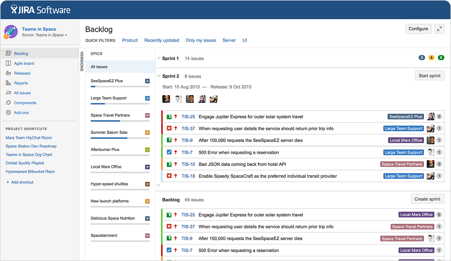

Додаток дозволяє роздавати завдання, розставляти приоритети та призначати данні. Можна відстежити статус виконання проекту. Програма проста у використанні. Дозволяє управляти різними проектами в одній команді, контролювати ефективність. Співробітники можуть створити окреме робоче простір на кілька справ. Користувачі доповнюють і коментують завдання, прикріплюють файли. Цілі можна візуалізувати у вигляді календаря. Програму не потрібно завантажувати - вона працює в браузері.
Asana інтегрується з Google Drive, Dropbox, Slack і іншими додатками, в тому числі - календарями і планировщиками; в платному акаунті можна відстежити ефективність роботи команди
Можна підключатися до різних командах і бачити тільки необхідну інформацію, без спаму; зовнішнім клієнтам надається доступ до певних завдань без реєстрації; система підходить для особистого планування
Проекти можна відображати і в звичайному форматі і на Kanban дошках; до завдань можна додавати обговорення
Програма дозволяє планувати проекти і призначати час виконання, бачити календар, ділитися документами, створювати робочі групи. Є стрічка обговорень за принципом соціальних мереж. Можна обмінюватися повідомленнями і завантажувати фотографії. Підключається до сторінок в соціальних мережах. Є система обліку робочого часу і звітності. Сервіс підходить для великих компаній.
Багатофункціональність - можна як складати звіти для керівників, так і додавати фотографії з корпоративних заходів
Працює за принципом соціальної мережі, дає колегам можливість для спілкування
Є можливість використовувати як CRM-систему
Microsoft Teams - новий додаток в рамках Office 365. Підключається до OneNote, Planner, Power BI і іншим програмам. Користувачі можуть створювати групові та особисті чати, бесіди для окремих проектів, обмінюватися файлами. Для дзвінків використовується Skype for Business. Є можливість планувати зустрічі і відеоконференції.
Завдання лунають через інтегрований Planner; можна працювати з документами прямо в додатку
Зручна для користувачів Office 365 - підключається до всіх програм цього сервісу
Сумісна з Asana, Trello і іншими планировщиками
Podio - додаток, що дозволяє працювати над проектами разом з командою, управляти проектами і завданнями, зберігати і обмінюватися файлами. Цю програму можна використовувати як CRM систему, або ж інтранет, в якому зможуть взаємодіяти ваші колеги
Гнучкt адміністрування дозволяє вам контролювати, хто має доступ до робочих областей Podio та можливість швидко вносити зміни.
Покращіть ваші процеси, щоб вмістити кожен крок і етап, забезпечуючи ефективність та ефективність в одному місці.
Сумісна з Asana, Trello і іншими планувальниками
Jira - потужний онлайн сервіс, що дозволяє командам-розробникам планувати проекти, призначати виконавців завдань, планувати спринти і збирати завдання в беклог, виставляти пріоритети і дедлайни
Велика кількість налаштувань фільтрації з застосуванням певних налаштувань для фільтрів, які будуть корисними для команди
Візуалізація дозволяє швидко орієнтуватися і робити зміни в спринті з детальними звітами
Простий і зручний трекер часу, що поєднується з простотою в управлінні проектами